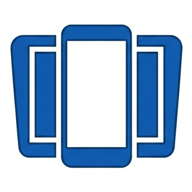

ScreenOnAutoMirror your Android phone screen to the Android Auto display, with media controls, touch forwarding and auto-start. Free — no paid features.

TshockLogs_Explosives
A TShock server plugin for Terraria that monitors and logs explosive item usage by players — timestamped entries with player name and coordinates, handy for tracking griefing. Configurable via a JSON file.